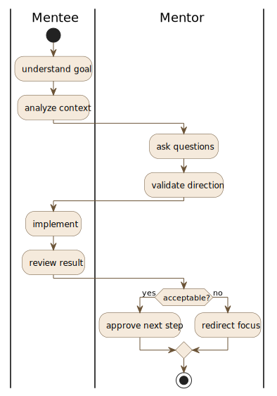

What guidance looks like in practice
A simple loop to turn confusion into informed decisions.
The loop repeats as new questions surface.
Day after day
Mentoring happens online, inside real tools and real working environments
Chat channels
short questions and quick updates
Video sessions
live calls with shared screens
Shared whiteboard
sketch ideas and flows together
IDEs
work inside tools that fit the problem
Version control
track changes decisions and context
Production environments
practice where systems actually run
Learning resources
curated notes literature and formats
Asynchronous thinking
work continues between sessions
Written reasoning
decisions captured not lost in calls
Why guidance matters today
AI can accelerate output, but it does not create understanding
Without a clear , results are trusted without being questioned
Guidance focuses on reasoning before tools so decisions stay grounded, explainable, and defensible
Mentoring as a shared process
Mentoring is not instruction and not problem-solving on behalf of the mentee. It is a shared process where both roles actively participate in understanding, reasoning, and decision-making.
The mentor guides thinking and challenges assumptions. The mentee brings context, attempts, and responsibility for execution.
What happens during a mentoring session
Sessions are exploratory by design. The goal is not to reach an answer quickly, but to make reasoning visible and identify what actually needs to be understood next.
How mentor and mentee work together
Mentoring focuses on making decisions explicit. Understanding why something is done matters more than producing an artifact.
- Work starts from real constraints: people, time, systems, and trade-offs.
- Questions and analysis expose assumptions before implementation.
- Tools, including AI, support thinking but never replace judgment.
Who this space welcomes
Pre university mentees (16+): preparing for studies and building foundations before coursework begins.
University mentees: filling gaps in , , and systems reasoning.
Early career mentees: strengthening design and when systems start to matter.

How I approach learning software engineering
I stay with what feels unclear instead of moving past it. Understanding comes from identifying missing pieces and rebuilding ideas from simple building blocks.
This is not a branded method. It is how I work: plain language, reusable ideas, and one to one adapted to each person and context.
Common situations I help with
"I can build features, but I don’t really understand the behind them"
"I follow tutorials, but I struggle to make design decisions on my own"
"I know tools and languages, but and APIs still feel confusing"
"When something breaks, I don’t know where to start looking"
"University courses move fast, but skip how to reason about real systems"
"I get results, but I can’t clearly explain why they work"
Background and grounding
I began learning to program in 1997, at a very young age, in an environment with limited resources. That early start meant working close to the fundamentals, long before modern abstractions and automated tools became common.
I was exposed not just to different , but to different of from the 1980s onward. This perspective shaped how I think about change, continuity, and what truly matters in .
Very early on, I also experienced guidance rooted in a rigorous tradition and early . That exposure helped form a calm, structured way of reasoning that still guides how I analyze problems and make decisions today.

Learning situations people bring to me
Figuring out what to learn next
Set clear priorities so learning stops feeling scattered and overwhelming.
Concepts that are almost there
Turn partially understood ideas into something you can actually rely on.
When will not behave
Walk through broken step by step to see where reasoning breaks down.
Making understandable
Rewrite and so intent is clear, not just syntax.
How the pieces fit together
See how , , and connect in real systems.
Coursework moving too fast
Slow things down and rebuild the steps that were skipped or rushed.
Building while learning
Ship small, meaningful pieces while fundamentals are still forming.
Getting tools out of the way
Set up , , and so tooling supports thinking instead of blocking it.
Choosing next steps
Decide what to practice next and how to demonstrate real progress at work.

How I think about learning
Most people struggle not from lack of , but from missing a clear . I help build that step by step so you know why things work, not just how to type them.
The goal is to see , connect ideas across tools, and feel steady when something breaks. Deliberate thinking matters more than tricks; once the is clear, the follows.
What this is (and what it is not)
Personal guidance, not generic tutorials.
Grounded in experience, not driven by trends.
Focused on depth, not shortcuts.
Not a certification program.
Not a course marketplace.
How this work moves forward
Clarity builds over time. Guidance helps you see blind spots, but it does not replace effort.
This work depends on shared expectations and honest attention to what is unclear.

When this kind of guidance tends to help
When you want to understand ideas, not just patch problems.
When you are open to questioning what you think you know and rebuilding it.
When you can describe where you get lost, even if it feels simple.
When you prefer a steady pace over hype or shortcuts.
If you mainly need tasks executed, this is not the right fit.
When pre university students, university students, or early career mentees want steady, serious .